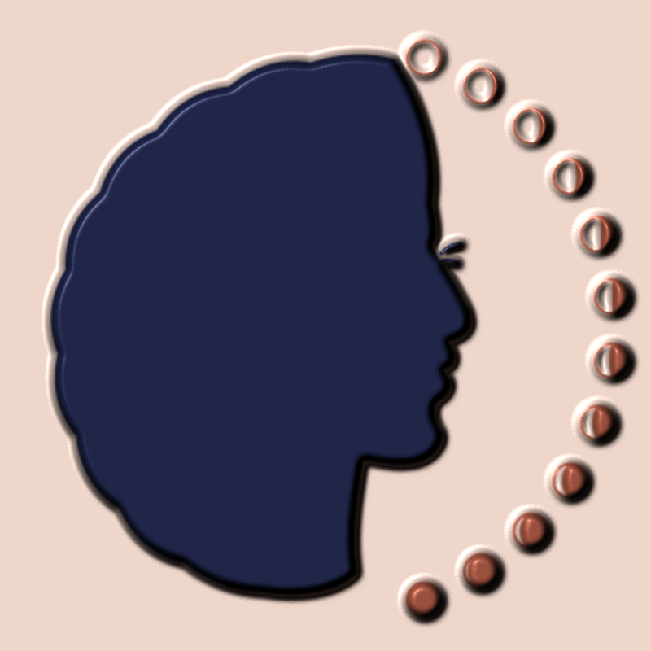

Separate brands, one studio
Initiatives
Alimayu Studio builds initiatives around real needs. Each one has its own name and its own look, with the same research, education, and care behind it.

Postpartum health and wellness
ThePostmoonClub
A community for the mother, through the twelve months after birth. Plain facts, a free map for her support circle, and a monthly mail club.
Visit The Postmoon Club →Congregational Home Visiting
ABIDE with FAAITH
Trained members of a congregation visit families at home to promote safe, stable, and nurturing relationships for the child and family. It builds on the CREED model, which Dr. Alimayu and Rev. Dr. Armstrong created.
Visit ABIDE with FAAITH →